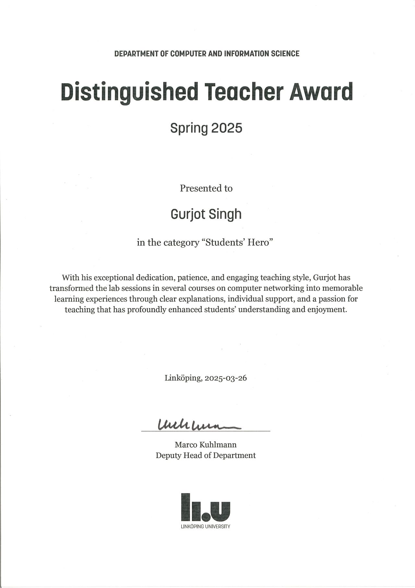
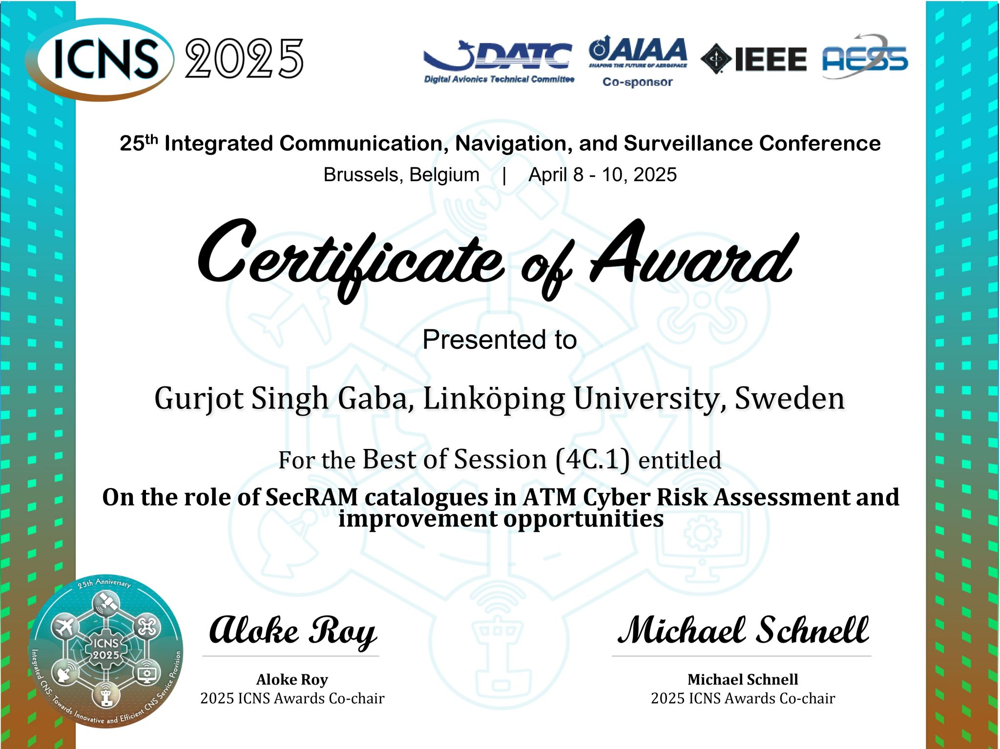
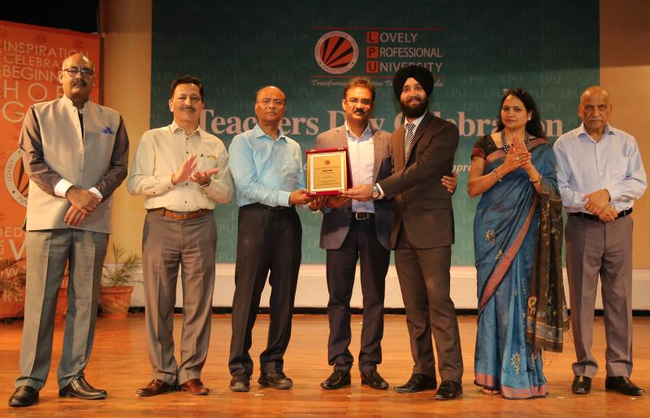
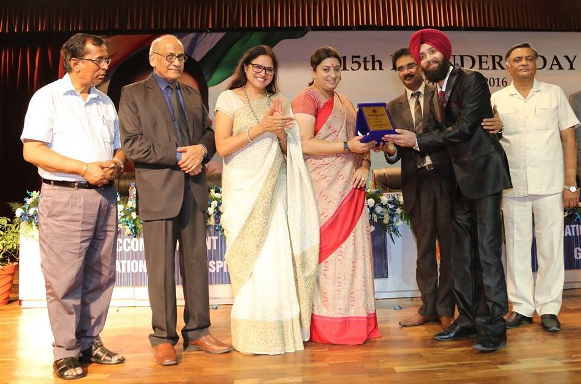

Distinguished Teacher Award — Students’ Hero
Department of Computer and Information Science, Linköping University.
Awards & Certifications
Honours

Department of Computer and Information Science, Linköping University.

25th Integrated Communications, Navigation and Surveillance Conference · EUROCONTROL Headquarters · Brussels, Belgium.


Lovely Professional University, India.
Certifications
Listening 6.5 · Reading 9.0 · Writing 7.0 · Speaking 8.5.
ISC2 · ANAB-accredited ISO/IEC 17024 credential.
Didacticum, Linköping University · 120 hours / 4.5 ECTS.
Didacticum, Linköping University · 20 hours / 0.75 ECTS.
Didacticum, Linköping University · 120 hours / 4.5 ECTS.
Didacticum, Linköping University · 80 hours / 3 ECTS.